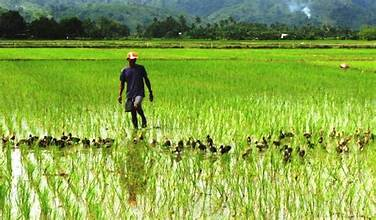
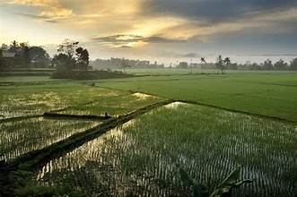
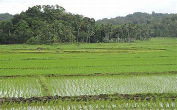
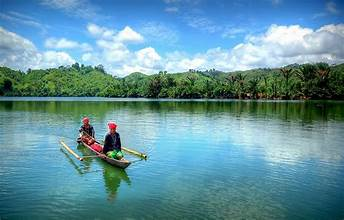
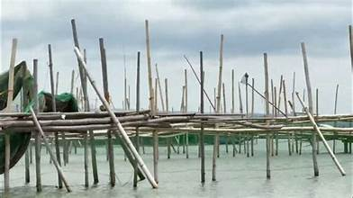
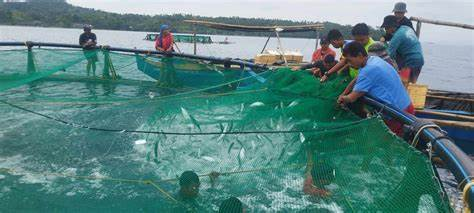

Agriculture and fishing are the twin pillars of the Zamboanga del Sur economy. These industries support the majority of the provincial population and contribute significantly to the local food supply and export earnings.
Coconut is the dominant agricultural crop, with large plantations spread across the lowland and coastal areas of the province. Copra — dried coconut meat used to produce coconut oil — is the primary product, and the province is a significant copra supplier to processing facilities in Mindanao.
Rice is cultivated in the irrigated lowland areas, particularly in the municipalities of Labangan, Kumalarang, and Tukuran. Corn is also widely grown and serves as both food and animal feed. Government irrigation projects have helped improve rice yields in key production areas.
Fishing is a critical livelihood for coastal communities. Artisanal fishermen use traditional methods to catch reef fish, tuna, sardines, and squid in the rich waters of Illana Bay. Commercial fishing operations also work the deeper waters of the Moro Gulf.
Seaweed farming has grown considerably in coastal municipalities, providing income for small-scale farmers. Fish ponds, crab fattening, and other aquaculture activities are also practiced. Government programs through BFAR (Bureau of Fisheries and Aquatic Resources) provide support and training.
Farmers and fisherfolk face challenges including low farm-gate prices, post-harvest losses, climate variability, and limited access to credit and markets. The Department of Agriculture and local government units implement support programs including seed distribution, fishing vessel assistance, and market linkages.
Hover to fan · Hover a photo to pick


